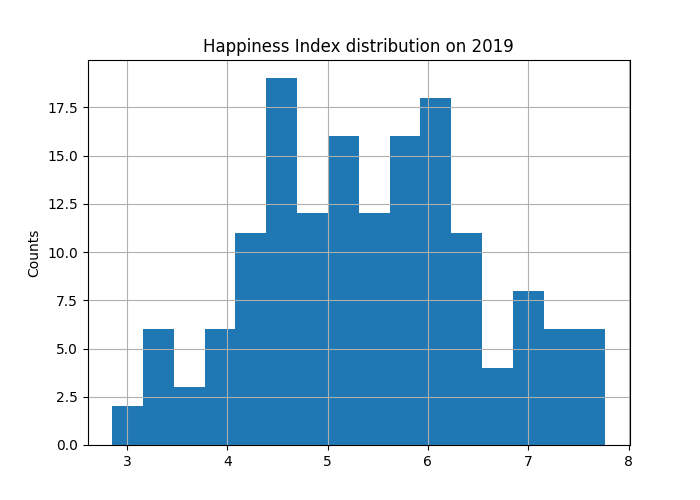
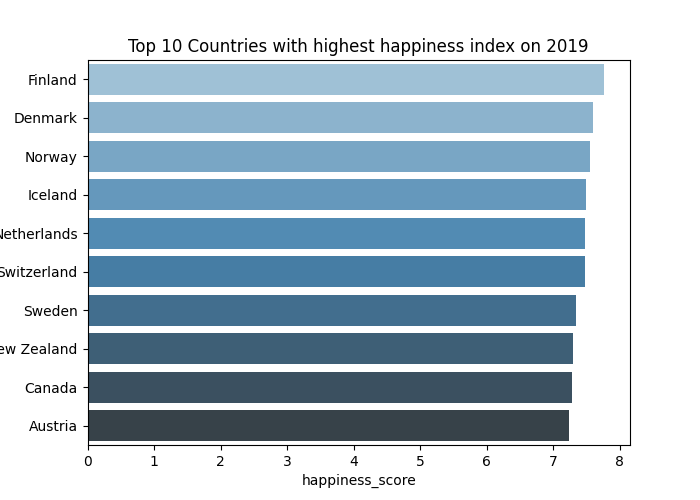
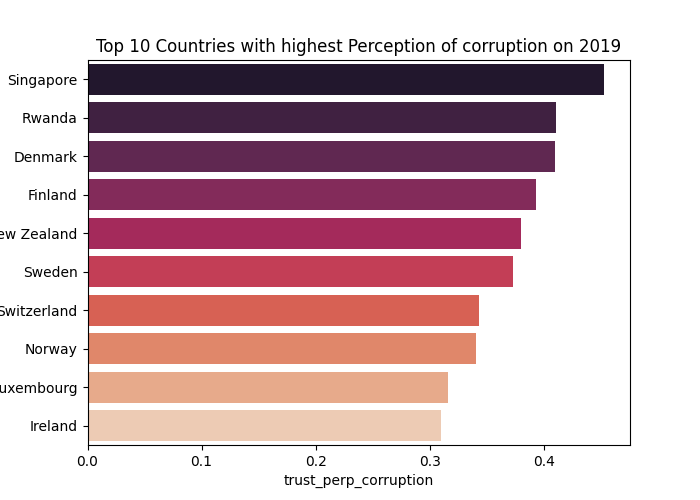
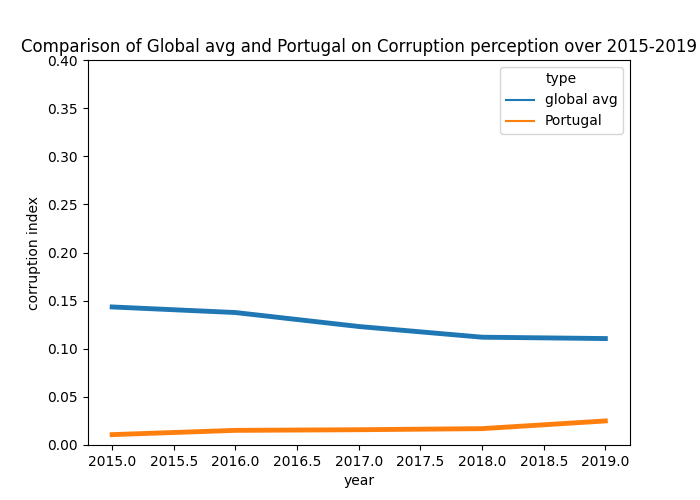
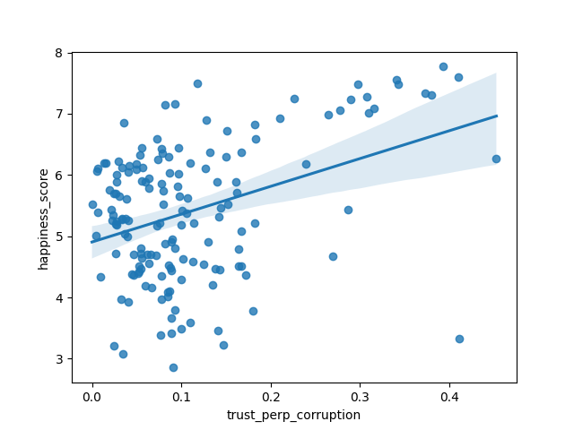

Developed by Ana Mesquita, Filipe Doria and Guilherme Salles
Hello , Welcome to our quick report!
First let check how the happiness index is distributed around the countries over 2019
Below you can see the top 10 countries with high happiness index on the year 2019.
| happiness_rank | country | happiness_score | economy | social_support | health | freedom | generosity | trust_perp_corruption | |
|---|---|---|---|---|---|---|---|---|---|
| 0 | 1 | Finland | 7.769 | 1.340 | 1.587 | 0.986 | 0.596 | 0.153 | 0.393 |
| 1 | 2 | Denmark | 7.600 | 1.383 | 1.573 | 0.996 | 0.592 | 0.252 | 0.410 |
| 2 | 3 | Norway | 7.554 | 1.488 | 1.582 | 1.028 | 0.603 | 0.271 | 0.341 |
| 3 | 4 | Iceland | 7.494 | 1.380 | 1.624 | 1.026 | 0.591 | 0.354 | 0.118 |
| 4 | 5 | Netherlands | 7.488 | 1.396 | 1.522 | 0.999 | 0.557 | 0.322 | 0.298 |
| 5 | 6 | Switzerland | 7.480 | 1.452 | 1.526 | 1.052 | 0.572 | 0.263 | 0.343 |
| 6 | 7 | Sweden | 7.343 | 1.387 | 1.487 | 1.009 | 0.574 | 0.267 | 0.373 |
| 7 | 8 | New Zealand | 7.307 | 1.303 | 1.557 | 1.026 | 0.585 | 0.330 | 0.380 |
| 8 | 9 | Canada | 7.278 | 1.365 | 1.505 | 1.039 | 0.584 | 0.285 | 0.308 |
| 9 | 10 | Austria | 7.246 | 1.376 | 1.475 | 1.016 | 0.532 | 0.244 | 0.226 |
On the chart above, we can see the happiness index of Portugal in comparison with the global average over the years.
On the chart below we can see the top 10 countries with highest perception of corruption on 2019.


On the chart above, we can see the perception of corruption of Portugal in comparison with the global average over the years.

On the chart above we have the data distribution and a line showing a linear relation between happines and corruption perception on 2019.